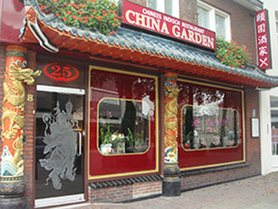

Nieuw
1 persoon€ 13,00Babi Pangang, Saté (1 stokje), Nasi, Bami of Rijst
Chinees-Indisch restaurant in Asten
Afhalen van de vertrouwde kaart, lopend buffet in het weekend en catering voor iedere gelegenheid. Aan de Emmastraat 8 in Asten.
Ma, wo t/m vr 16:00 - 21:00 · za, zo en feestdagen 14:00 - 21:00
Laat u verrassen door onze chef-kok met een buffet dat speciaal voor deze gelegenheid is samengesteld: diverse soepen, voor- en bijgerechten, hoofdgerechten met vis, vlees en groente, salades, fruit en ijs. Kom deze kerst en of nieuwjaar naar China Garden en geniet van lekkere gerechten en een avondje gezelligheid.
Bel ons en noem het nummer van het gerecht: zo gaat bestellen het snelst. Is de vaste telefoon niet bereikbaar, dan kunt u uw bestelling via WhatsApp doorgeven.
De afhaallijst als document: download de afhaallijst (PDF). Gerechten met de naam China Garden zijn onze huisgerechten.

Een keuze uit talrijke Chinese en Indische gerechten: soepen, voor- en bijgerechten, hoofdgerechten met vis, kip-, varkens- en rundvlees, salades en vers fruit.
Maak gebruik van onze catering om ook aan huis te genieten van onze vertrouwde gerechten. Uitermate geschikt bij iedere gelegenheid om uw gasten, familie, collega's of vrienden te verwennen. Graag helpen wij u om iedere gelegenheid tot een succes te maken.
€ 14,50 p.p.
€ 16,50 p.p.
€ 18,50 p.p.

Babi Pangang · Foe Yong Hai · Tjap Tjoy · Koe Loe Yok · Kip Kerrie · Varkenshaas met ketjapsaus · Gebakken Champignons · Saté
Kipfilet met Gon-Bao saus · Garnalen met pikante saus · Fo Nam (gebakken magere spek) · Cha Siu (geroosterd varkensvlees) · Ossenhaas met zwarte bonensaus · Kipfilet met zoetzure saus · Indische Rundvlees · Tongfilet met pikante saus
Voor meer informatie bent u altijd welkom bij ons. Bel 0493 - 694 709 of mail ons.
Loop gerust eens binnen of bel ons voor de mogelijkheden.
Bel 0493 - 694 709| Maandag | 16:00 - 21:00 |
|---|---|
| Dinsdag | Gesloten (m.u.v. feestdagen) |
| Woensdag | 16:00 - 21:00 |
| Donderdag | 16:00 - 21:00 |
| Vrijdag | 16:00 - 21:00 |
| Zaterdag | 14:00 - 21:00 |
| Zondag | 14:00 - 21:00 |
| Feestdagen | 14:00 - 21:00 |
Iedere zaterdag en zondag lopend buffet, graag tijdig reserveren.

Chinees-Indisch Restaurant China Garden
Emmastraat 8
5721 HB Asten